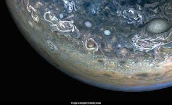

Jupiter
The King of Planets
About Jupiter
Jupiter is the largest planet in our solar system - so big that all the other planets could fit inside it! Jupiter is known as the "Failed Star" because it could've been a star if the Sun didnt become so big in the creation of the solar system.Jupiter is made mostly of hydrogen and helium, the same elements found in the Sun.
- Diameter: 88846 miles (11 times wider than Earth)
- Distance from Sun: around 484,500,000 miles (5.2 AU)
- Day Length: 9.93 Earth hours
- Year Length: 11.86 Earth years
- Moons: 80-95 known moons
- Temperature: -234°F at cloud tops

Jupiter as seen by NASA's Juno spacecraft, showing its swirling clouds and storms.
The Great Red Spot and Jupiter's Storms
Jupiter's Atmosphere:
- Great Red Spot: A massive storm bigger than Earth that has existed for centuries, though it's slowly shrinking!
- Storms: Jupiter has thousands of storms besides the Great Red Spot, including smaller red spots and white ovals!
- Weather: The planet has lightning storms more than 1000 times more powerful than Earth's!
Jupiter's Moons

The Galilean Moons:
In 1610, Galileo Galilei discovered Jupiter's four largest moons, which now called the Galilean moons. Each one is a fascinating world of its own:
- Io: IO is covered with volcanoes that shoot lava up to 250 miles high. It's stretched and squeezed by Jupiter's gravity, creating heat that powers its volcanic activity.
- Europa: Has a smooth icy surface and very few craters.
- Ganymede: The largest moon in the solar system with its own magnetic field.
- Callisto: Covered with craters, it's the most heavily cratered object in the solar system.
Jupiter has around 85 other moons beyond these four massive moons.